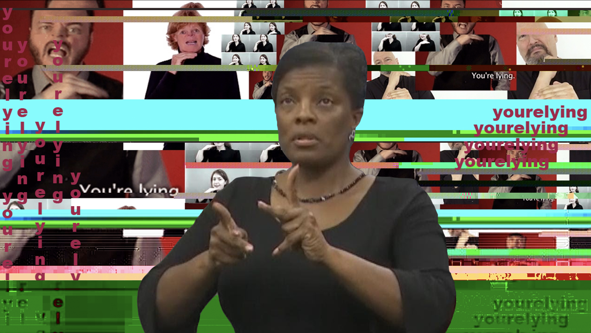
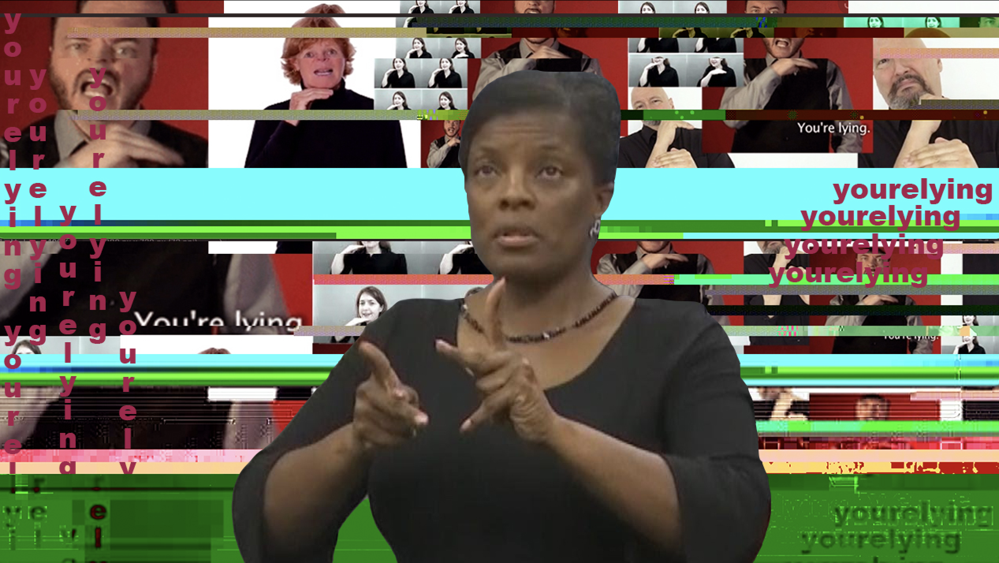
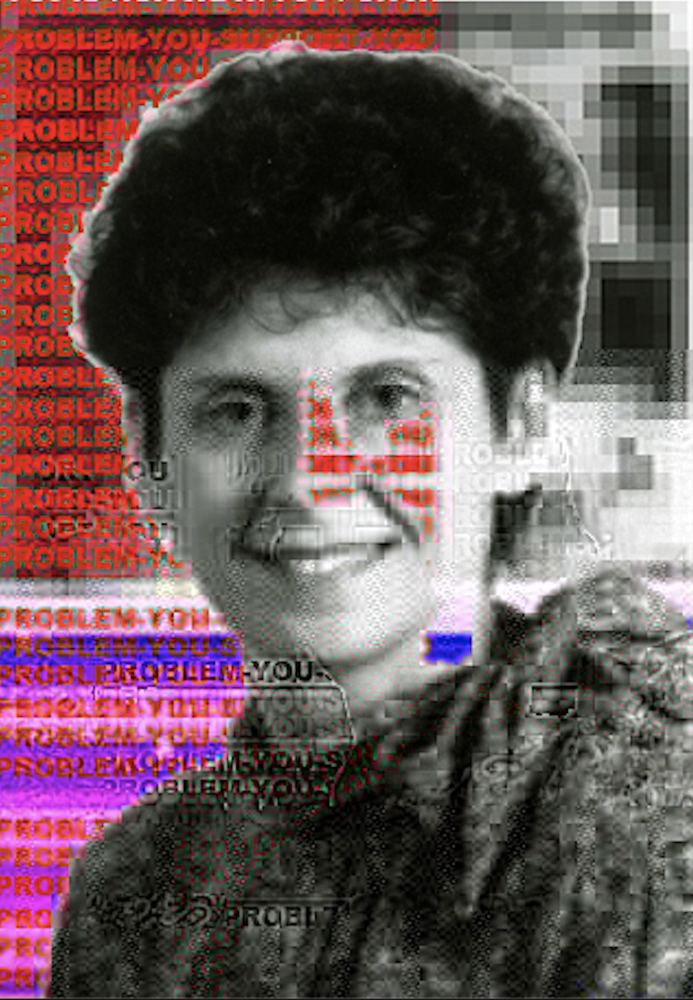
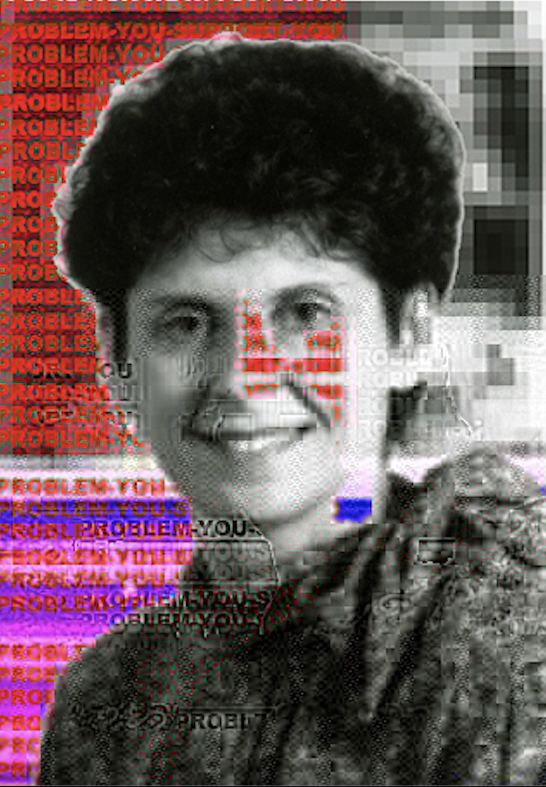

Intructor Alan Perry
Loyola University Chicago
Students:
Jack Bran ~ Natalie Burdsall ~ Daniel Espinoza ~ Mac Miller ~ Sydney Williams
Remix is a cross between critical thinking and creativity. In this class students learn about the role of remix in contemporary society made up of legal constraints, moral challenges, political and economic interests, and the rise of participatory culture embedded in social media. Students explore these issues through hands-on play and serious creative engagement with the language and tools of remix, and through critical engagement with the theory and history of remix.
When brainstorming for this project, I had just finished an episode of The Sopranos and had a thought that it would be funny if this serious and gritty show were edited to appear like a sitcom. I found the juxtaposition to be funny and I decided to go from there. The Sopranos episode on Columbus Day is always one that sticks in my mind and I wanted to show the absurdity of the whole episode with the laugh track. the resources I found were just clips from the show, studio audience soundtracks, as well as the Full House theme song as that show is about as squeaky clean as it gets, so the contrast with The Sopranos would show through even further. While the characters are seen to be laughing at a sensitive topic, the laugh track is meant to highlight the absurdity of their comments and the situation.
 

 



For my final project, I decided to spend time reflecting on my identity as a Child of a Deaf Adult, or CODA. All too often my family sees horrendous discimination against my mom simply because she is Deaf, often rooted in pure ignorance of fear. Deafness is incredibly beautiful, and one of the bet parts of my life - this project offers a critique on all persectives that challenge the Deaf identity. From abusive cops to the founder of oralism, the people I chose to representy are key examples of audism in both the past and the present, and have been distorted through glitch art to represent their distorted view of Deafness.
artist statement goes here
This project was created out of my interest in both text and glitch art. This piece is centered around an original poem, in which there are hyperlinks to 3 connected, but distinct, pieces. All three pieces center around the glitching of the poem by putting the poem’s text throughout its own hex code. One shows the process, one shows a glitch, and one shows a series of glitches.
My process included gathering clips from the original show to use, importing them into Premiere Pro, and picking the moments that seemed funny when the production value was taken away. A lot of what makes reality shows entertaining is the dramatic music and the constant drama about small things. I wanted to call attention to how quiet some moments probably were before the editors of the show added music. I drew inspiration from videos that are similar to this such as this video supercutting and redubbing RuPaul’s Drag Race or this one that removes the talking from Wendy Williams’ talk show. The nature of these videos is definitely more meme quality than professional quality, but making this video taught me a lot about finding sounds, recording sounds, audio editing, and the importance of sound design to meaning.